Start here
Quick comparison
| Organism | Exposure | Key clue or specimen |
|---|---|---|
| Leishmania | Female sandfly | Chronic ulcer; amastigotes in macrophages at the active edge. |
| Loa loa | Chrysops deerfly | Eye worm or Calabar swellings; sheathed microfilariae in daytime blood. |
| Onchocerca volvulus | Simulium blackfly | Itch, nodules or visual loss; unsheathed microfilariae in a skin snip. |
| Guinea worm | Drinking water with infected copepods | Painful limb blister with an emerging adult female. |
| Trichinella spiralis | Undercooked pork or wild game | Gut symptoms, then fever, muscle pain and swelling around the eyes. |
| Cutaneous larva migrans | Sand or soil contaminated by animal hookworms | Itchy, raised, winding track, often on the foot. |
| Scabies | Prolonged skin contact | Nocturnal itch; short burrows in finger webs or on wrists. |
| Lice | Close contact; body lice live in clothing | Live lice or attached eggs (nits); body lice spread bacterial diseases. |
| Myiasis | Fly larvae, often after tropical exposure | Boil-like lesion with a central breathing opening. |
Host terms: A definitive host harbours the adult or sexually reproducing stage; an intermediate host supports a developmental stage. A vector transmits the parasite and can also be an intermediate host.
Protozoa
Leishmania
Remember the two forms: Promastigote = flagellated form passed to humans by the sandfly. Amastigote = intracellular form found in human tissue.
Life cycle and diagnosis
- The female sandfly injects promastigotes. Macrophages engulf them; they become amastigotes, multiply and spread to other phagocytic cells.
- The fly ingests infected cells. In its gut the parasite returns to the promastigote stage, multiplies and migrates to the mouthparts.
- Cutaneous diagnosis: Sample the active edge of the lesion. Look for small amastigotes with a nucleus and a kinetoplast, a small body containing mitochondrial genetic material.
Three clinical forms
- Cutaneous: Papule or nodule on exposed skin can become an ulcer with a raised edge. Some lesions heal with a scar.
- Mucosal: Destructive nose or mouth lesions, classically associated with Leishmania braziliensis; nasal septum damage is a key clue.
- Visceral (kala-azar): Fever, enlarged liver and spleen, low counts across blood cell lines (pancytopenia), and sometimes hyperpigmentation.
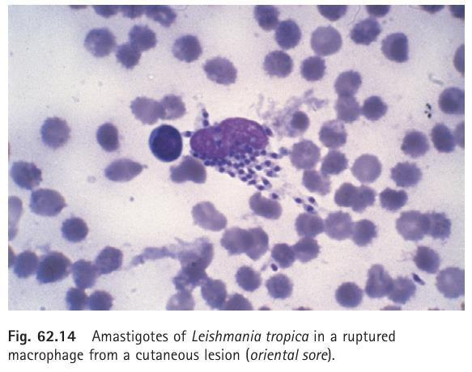
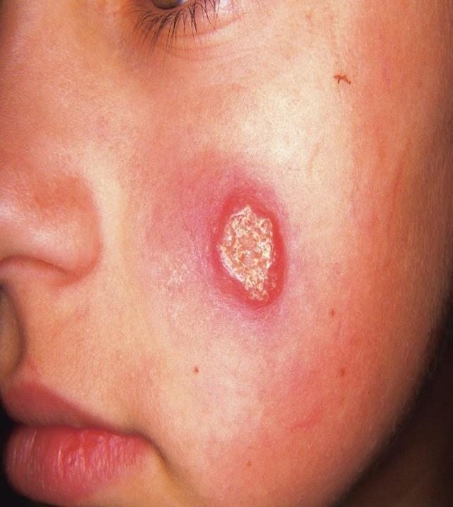
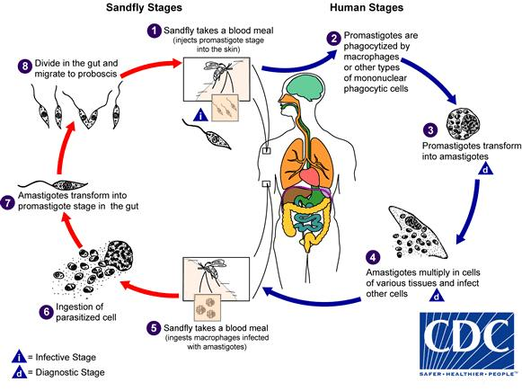
Species associations, treatment and prevention
- Old World cutaneous: L. major, L. tropica (Oriental sore) and L. aethiopica; the latter can also cause diffuse cutaneous disease. Here L. means Leishmania.
- New World: The L. mexicana complex (Chiclero’s ulcer) and L. peruviana (uta) are classically cutaneous. The L. braziliensis complex is classically linked to mucosal disease.
- Visceral: Think L. donovani and L. infantum, including the New World name L. chagasi.
- Treatment examples: Sodium stibogluconate (an antimonial) and amphotericin B. Choice depends on the form, species and region. Treated nets, protective clothing and repellent help prevent bites.
Vector-borne helminths
Loiasis and onchocerciasis
Shared cycle: An infected fly deposits third-stage larvae (L3), which enter the bite wound. Adults in humans release microfilariae. The fly picks up microfilariae during feeding; they mature to L3 in the fly.
Loa loa · African eye worm
- Exposure: Day-biting Chrysops deerflies in West and Central Africa.
- Adults: Migrate through subcutaneous tissue and can cross under the conjunctiva. Calabar swellings are transient, localised areas of swelling associated with worm migration.
- Diagnosis: Look for sheathed microfilariae in daytime blood. Seeing the adult eye worm is also diagnostic.
- Drug association: Diethylcarbamazine (DEC); parasite load matters for safe treatment.
Onchocerca volvulus · River blindness
- Exposure: Simulium blackflies breed near fast-flowing water; most cases occur in sub-Saharan Africa.
- Adults: Live in firm subcutaneous nodules called onchocercomas. Inflammation around dying microfilariae causes itching, skin changes and eye damage.
- Diagnosis: Look for unsheathed microfilariae in a skin snip, a small superficial skin sample.
- Drug association: Ivermectin targets microfilariae; heavy Loa loa coinfection raises the risk of serious reactions.
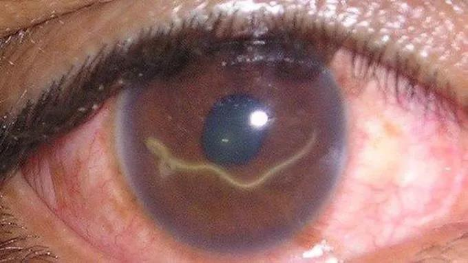
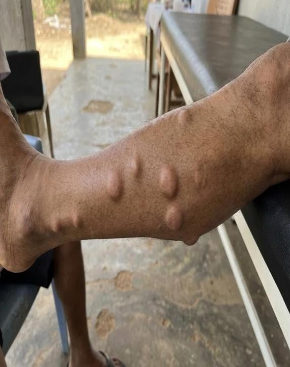
Water, food and soil
Other helminths
Guinea worm · Dracunculus medinensis
- Infection: Drink water containing copepods such as Cyclops carrying L3. The copepod is the intermediate host; humans harbour adult worms.
- Cycle: Larvae cross the gut wall and mature in deeper tissues. About a year later, a gravid female reaches the skin, usually on a lower limb. Water contact triggers release of first-stage larvae, which are swallowed by copepods.
- Exam clue: A painful blister followed by emergence of a long white worm. Diagnosis is clinical; gradual mechanical extraction is the classic management.
Trichinellosis · Trichinella spiralis
- Cycle: Encysted larvae in undercooked meat are released by digestion. Adults mature in the small intestine; females release live larvae that migrate to striated muscle and encyst.
- Two phases: Nausea, abdominal pain or diarrhoea first; then fever, myalgia (muscle pain), weakness and periorbital oedema (swelling around the eyes).
- Diagnosis: Eosinophilia supports it. Antibody testing or muscle biopsy can confirm it; an encysted larva is the infective stage in meat and can be seen in muscle biopsy.
Cutaneous larva migrans (CLM) · Animal hookworms
- Cycle: Adult Ancylostoma braziliense or Ancylostoma caninum live in cats or dogs. Eggs pass in faeces and hatch into rhabditiform larvae, which mature into infective filariform larvae in soil or sand.
- Human clue: Larvae penetrate exposed skin but typically stay superficial. A raised, intensely itchy, winding track on the foot, buttock or hand is usually diagnosed clinically. Eggs in animal faeces are part of the animal cycle.
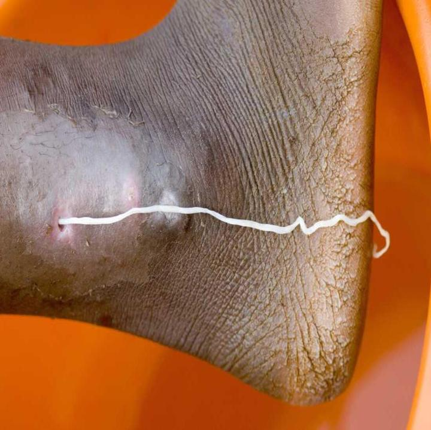
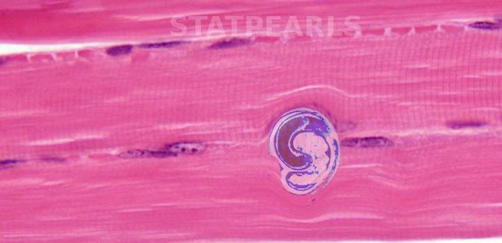
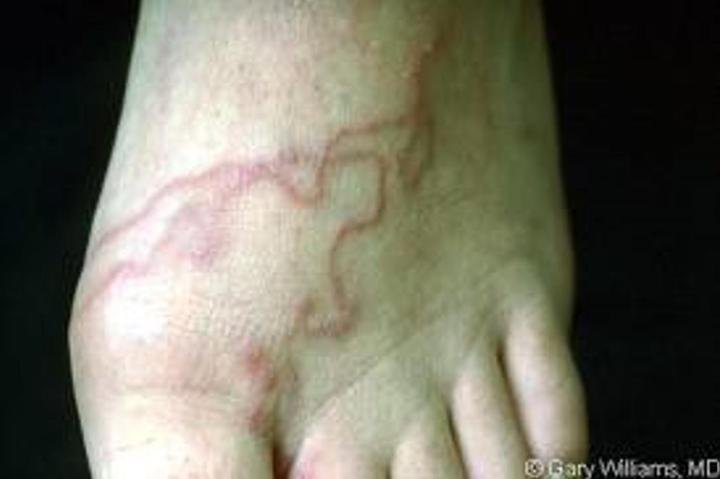
Mites and insects
Scabies, lice and myiasis
Scabies · Sarcoptes scabiei
- The female mite burrows into the outer epidermis. Night-time itch, short burrows and itchy papules in finger webs or at the wrists are classic. Scratching can lead to bacterial infection.
- When confirmation is needed, a skin scraping can show mites, eggs or faecal pellets. Permethrin is a common treatment; household and close contacts should be managed at the same time.
Lice · Three types
- Head: Pediculus humanus capitis; look for live lice on the scalp and nits attached to hairs. Combing helps find and remove lice and eggs.
- Body: Pediculus humanus corporis; look in clothing seams. Body lice are the classic vectors of epidemic typhus, trench fever and louse-borne relapsing fever.
- Pubic: Pthirus pubis; a broad, crab-shaped louse typically found on coarse hair.
Furuncular myiasis · Fly larvae
- A painful, boil-like lesion with a central breathing punctum suggests a larva under the skin.
- Human botfly: Dermatobia hominis (Central and South America) puts eggs on another insect, such as a mosquito. Tumbu fly: Cordylobia anthropophaga (Africa) lays eggs on soil or fabric.
- Management: Remove the larva; techniques depend on species and site.
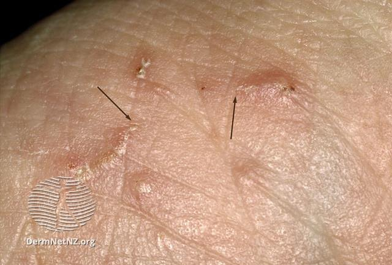
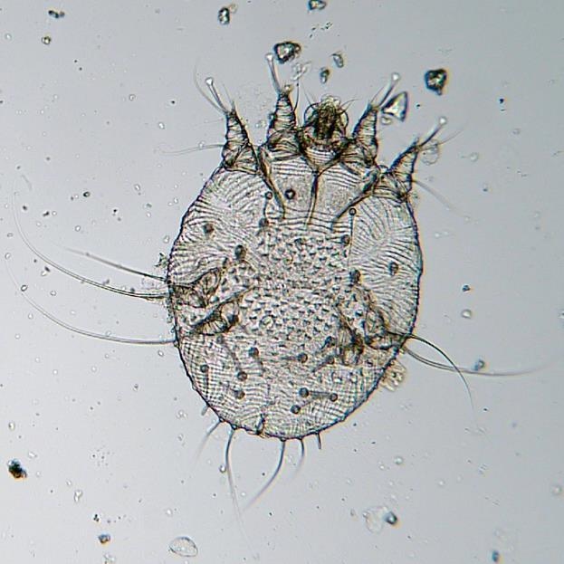
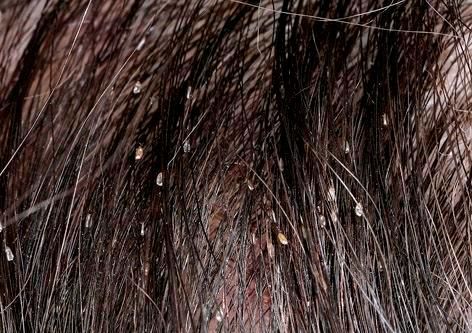
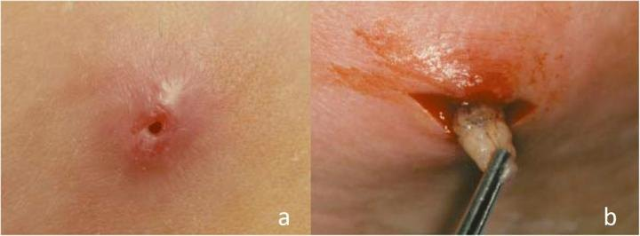
Last-minute review
Common exam traps
Match the stage to the specimen
- Sandfly inoculates promastigotes; the ulcer edge yields amastigotes.
- Loa loa: daytime blood. Onchocerca: skin snip. Both flies transmit L3.
Read the skin pattern
- Long winding track → larva migrans; short burrows with night itch → scabies.
- Boil with a breathing pore → myiasis; blister with an emerging long worm → Guinea worm.
Self-test
Practice questions
Select an option to record your answer, or use Show answer to read the explanation without scoring.
No questions match this filter.